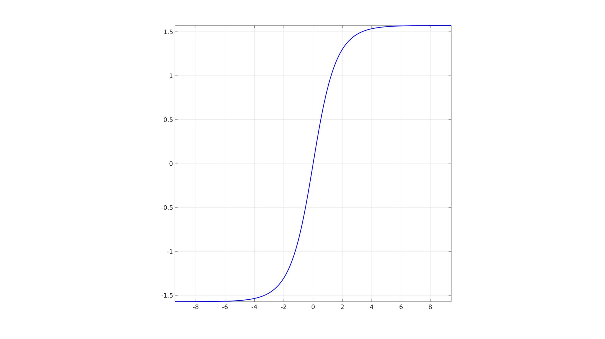

gd
Below is a demonstration of the features of the gd function
Contents
clear; close all; clc;
Syntax
y=gd(x);
Description
The output of is function y is the Gudermannian of the input x. The Gudermannian is defined as y=asin(tanh(x)). See also gd.
Examples
Plot setttings
lineWidth=3; fontSize=25;
Example 1: Computing the inverse Gudermannian
x=linspace(-3*pi,3*pi,500); %A range of data y=gd(x); %inverse Gudermannian
Visualize
cFigure; plot(x,y,'b-','LineWidth',lineWidth); axis square; axis tight; grid on; box on; set(gca,'FontSize',fontSize); drawnow;

GIBBON www.gibboncode.org
Kevin Mattheus Moerman, gibbon.toolbox@gmail.com